Create a new library of parts in Eagle, draw symbols and footprints, or reuse designs from other libraries.
I found this RGB LED on Digikey. I like it because it's bright (Millicandela values are high), and because it is a "side-firing" LED, which means that you solder it down sideways, shining it's light to the sides of the PCB instead of upwards.
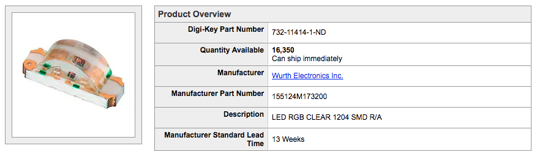First thing to do is to find the parts drawings in the datasheet. The Digikey page for this LED has a link to the PDF datasheet.
The first page has all the information we will need, like the LEDs dimensions, recommended PCB footprint, and it's schematic symbol.
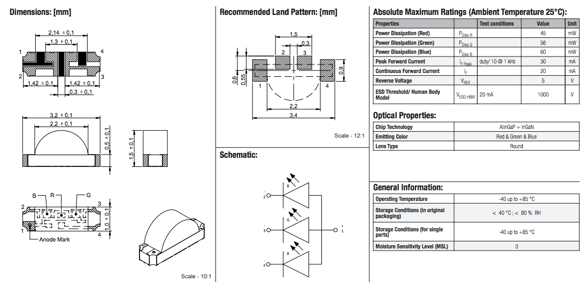Also, take a look at the chart on the top-right. It has the LED's electrical ratings. These or important for using Ohm's Law to determine a good voltage and resistor for each color's LED.
I do not know of any parts like this in my Eagle libraries, so I'm going to have to make my own.
I'll start by creating a custom Eagle library, and then creating this part inside it.
A library in Eagle is a set of "footprints" and "symbols", and the links between them called "devices". A library can hold one or many footprints, symbols, or devices.
With the Eagle Control Panel open, the left side of the window have a submenu called "Libraries".
This submenu shows you all the libraries that Eagle knows about on your computer. It will be default have two folders:
There will be more folders in the submenu if you've added addition library directories to the Eagle Directories window.
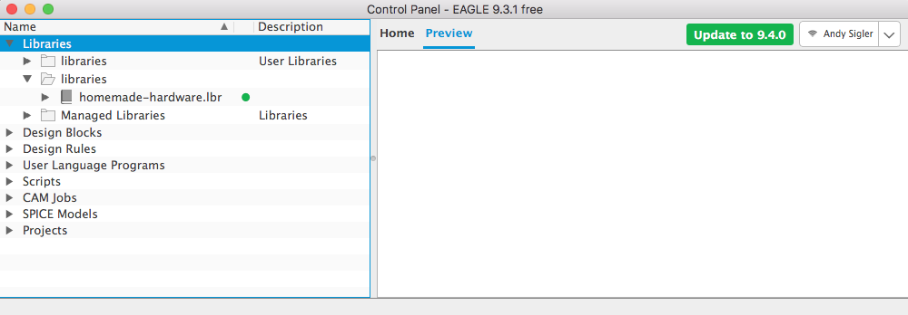You'll notice in the picture above that I have a third folder showing my homemade-hardware Eagle library. This is because I followed the Eagle Setup guide, and linked that file location in the Eagle Directories window.
There are also these small green dots next to all the library names. These green dots mean that those libraries are being used by Eagle schematic and design editors.
You can click that green dot to make it a grey dot, which means that it will no longer be active, and will not be used by any of the editors.
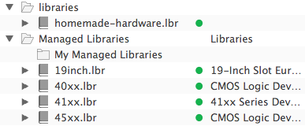 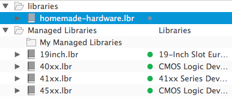I tend to leave all my libraries active, and I make sure all their dots are green.
I am going to create a brand new library, and add it to the "libraries" folder Eagle created in my Documents folder.
Go up to File -> New -> Library
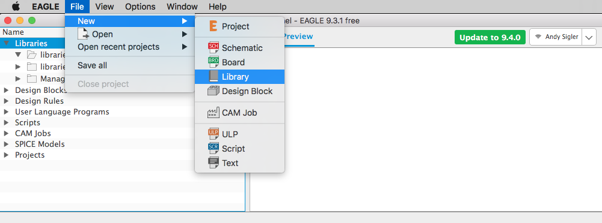A new, empty library window will open.
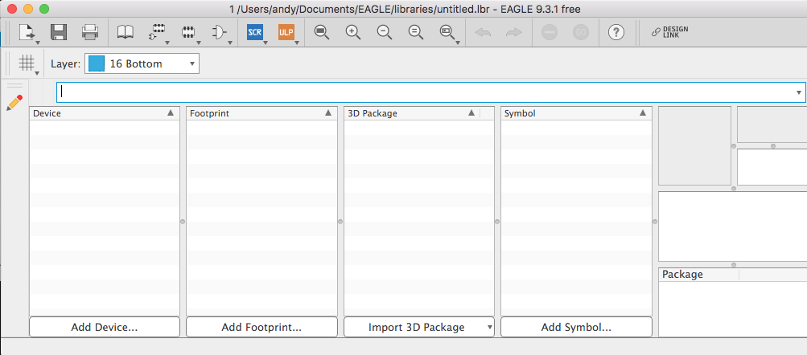Right now it has the name "untitled", so I'm going to save it in my Documents -> eagle -> libraries folder with a new name.
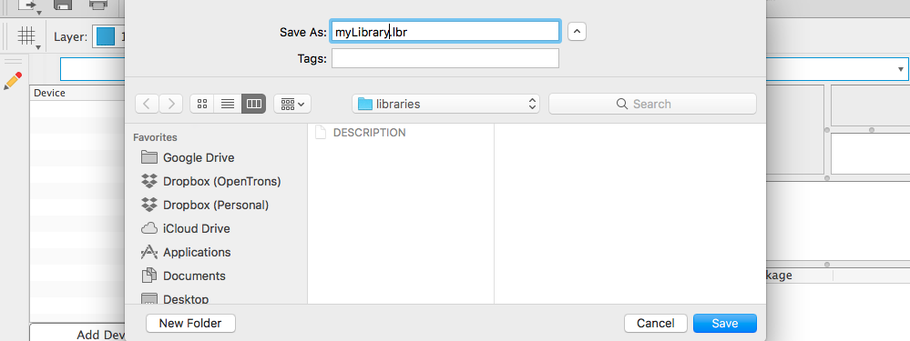If you go back to the Eagle Control Panel window, you will find your new library in the "libraries" folder, with its green dot activated.
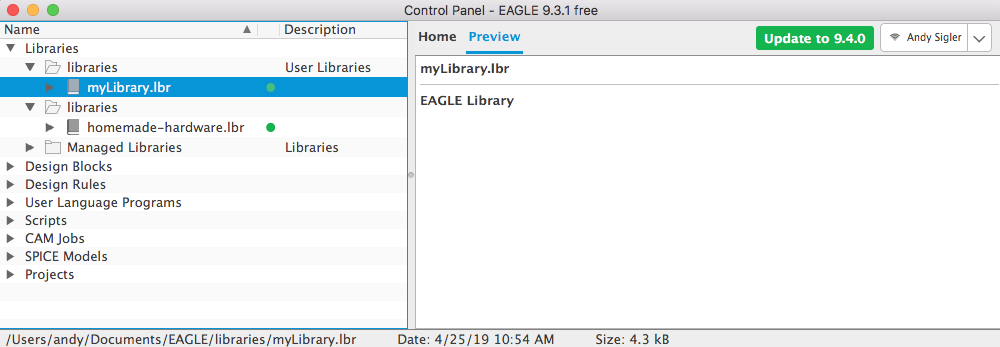With the new library open, click the Add Symbol... button near the bottom-right.
Eagle will ask you to first give this new symbol a name. Because the RGB LED I am making is a "common anode" LED (that means that all the colors share the positive + pin, or anode), I will include that in the name.
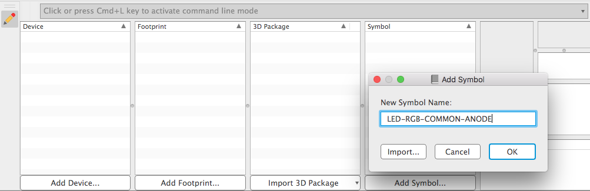It will then open a symbol editor. There is also the footprint editor, the device editor, and the "Table of Contents" window for the library. You can move between these with the buttons at the top of the window.
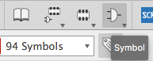 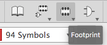 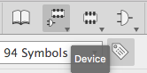 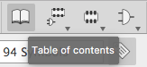We do mainly three important things here in the symbol editor:
To start, add some pins by clicking the PIN tool.
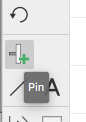A new pin will appear, and you can move it, rotate it, and drop in anyhwere you want (just like adding a part to a schematic).
The green circle at one end of the pin is where NETs will connect to it in schematics. Therefore, you should have the green circles pointing towards the edges of the symbol
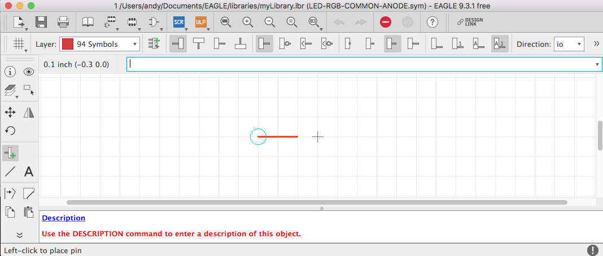The schematic in the LED's datasheet gives us a reference to copy when drawing our schematic.
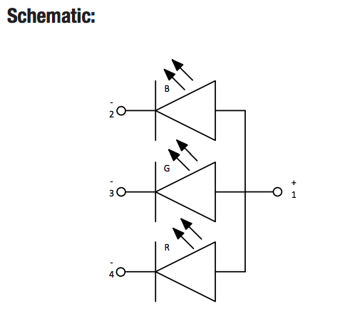I will add 4 PINs to this symbol, just like in the datasheet.
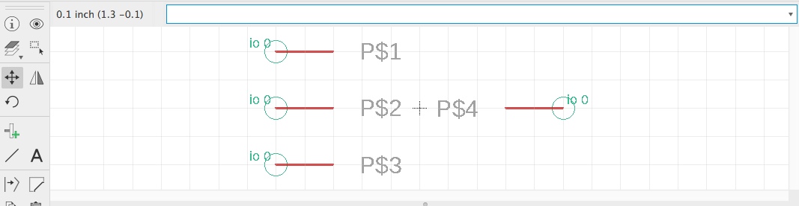Eagle gave them random names, so I will rename them based off what they do within the schematic.
You want to give symbol pins names that describe what they do, not where they are located on the part. This will make it easier to re-use symbols on many different footprints.
The pin on the right side is the positive pin (the anode), shared by all three colors. I will name this the ANODE.
Looking at the schematic in the datasheet, the three LEDs are given a label for their color (R, G, or B). I'll name those pins after their color.
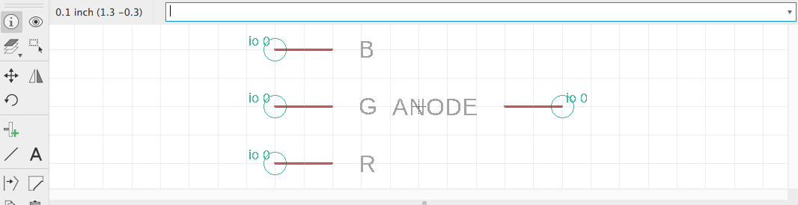Finally, I'll draw some LINEs to represent the schematic symbols for the LEDs. These should be drawn on the 94 Symbols layer.
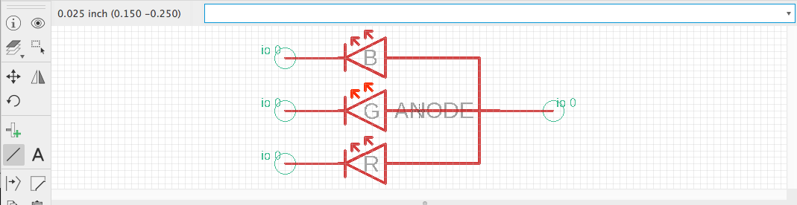Back in the library "Table of Contents" window, click the Add Footprint button.
It will ask you to give the new footprint a name. Whenever possible, try to name your footprints after their package name. You might get lucky and be able to re-use this footprint for a different schematic symbol the future.
The LED's datasheet describes it as a 1204, 4-SMD, right-angle (R/A) package. I'll give it a name close to that.
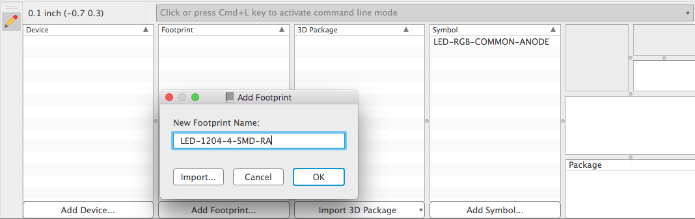An empty footprint editor will open. Here, we are doing four important things:
Looking at the recommended footprint on the datasheet, I can see that the RGB LED has four SMD connections with the board.
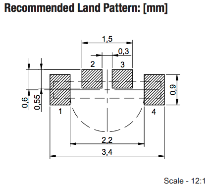Also, the datasheet is in millimeters, so I'll set the footprint editor's grid to millimeters.
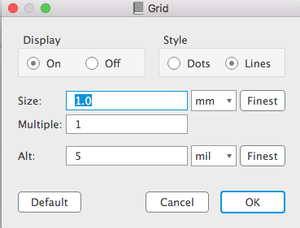Use the SMD command in Eagle to draw four SMD connections on this footprint.
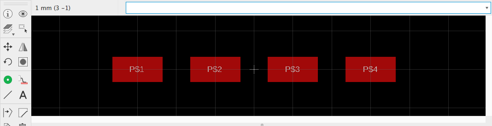Eagle will give them random names. I'll name them the same as the SMD connections in the datasheet's drawing.
Looking at the datasheet drawing, the two inner SMD connections (#2, #3) are 0.6mm x 0.55mm, and the two outer SMD connections (#1, #4) are 0.6mm x 0.9mm
Use the INFO command to click each SMD connection, change it's width and height, and then save with APPLY.
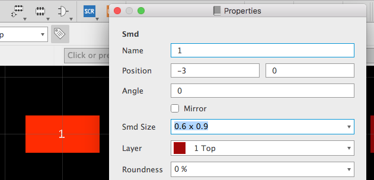Here they are all with the correct sizes.
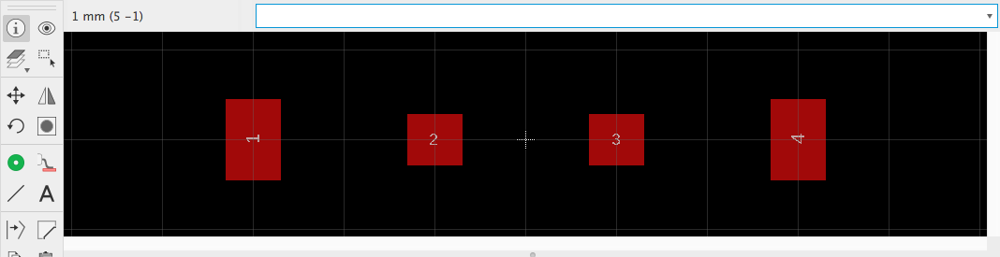In Eagle, the SMD connections are given XY coordinates from their middle. Using this drawing, we can do some math and figure out that pins #2 and #3 are (x=0.45mm, y=0.3mm) away from the center, and pins #1 and #4 are (x=1.4mm, y=0.0mm) away from the center.
Again, using the INFO command, click each part and change it's XY coordinate.
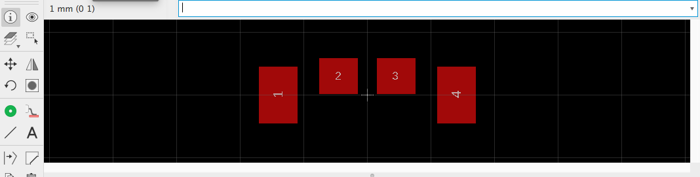Finally, I can draw some LINEs to show what the part will like. This doesn't need to be as accurate as the SMD connectors, so I just created a 0.1mm grid and drew lines that looked close enough to matching the datasheet's footprint.
The LINEs should be drawn on the 21 tPlace layer.
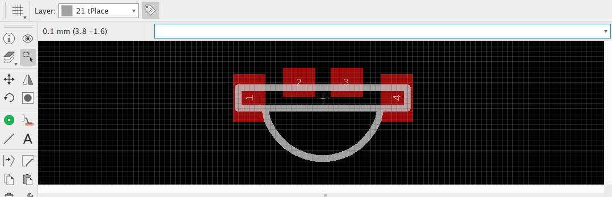Now it's time for the exciting part, connecting our symbol to the footprint within a device.
A device is made up of only one (1) schematic symbol, and it can hold any number of footprints. For example, there can be a "Resistor" device, which one single "Resistor" schematic symbols, but then many many footprints to represent all the packages that a resistor can come in.
In the library's "Table of Contents" window, click the Add Device button. Since only one symbol can be inside a device, I'll give it a name similar to the symbol.
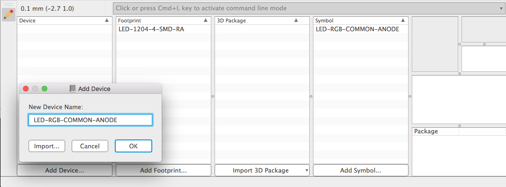The device editor has a left and a right panel. The left panel is where you add the symbol, and the right panel is where you add one or more footprints.
On the left side, add the symbol by pressing the Add Part button.
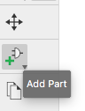A window opens showing all the symbols in the library. This library just has one, select it.
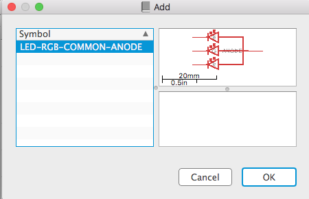Place the symbol over the origin, and click to drop it in place. Now a symbol has been added to the device.
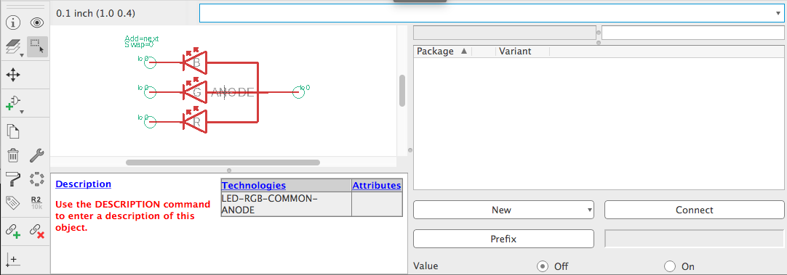In the right panel, click the New button, and add a local package (the footprint we just made).
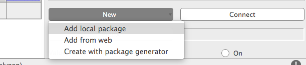Add the footprint we just made, and it will show up in the footprint list, along with a picture.
Notice there is a yellow [!] next to the footprint. This is because we haven't connected it to the symbol yet.
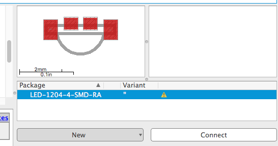Highlight the footprint, and press the Connect button in the bottom right.
A window will open, showing all the PINs from the symbol, and the SMD and/or PAD connections in the footprint.
This is why it was so important that we name all the PINs and SMDs/PADs. If they had random names, this next step would be easy to mess up.
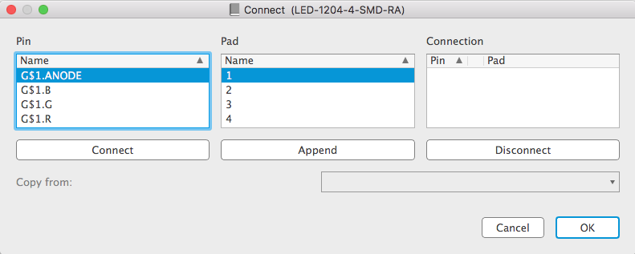Look back at the schematic image from the datasheet. Each pin has a label, saying what footprint pad it is connected to (the numbers 1-4).
I can see the Anode pin is connected to the SMD pad #1, so I'll highlight both of those, and press Connect.
After connecting, they will both show up together in the right "Connection" column.
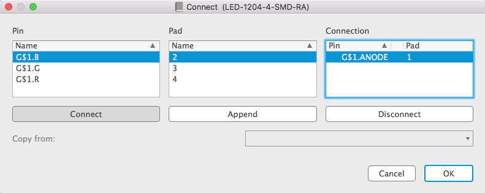Carefully follow the datasheet, and connect the rest of the pins.
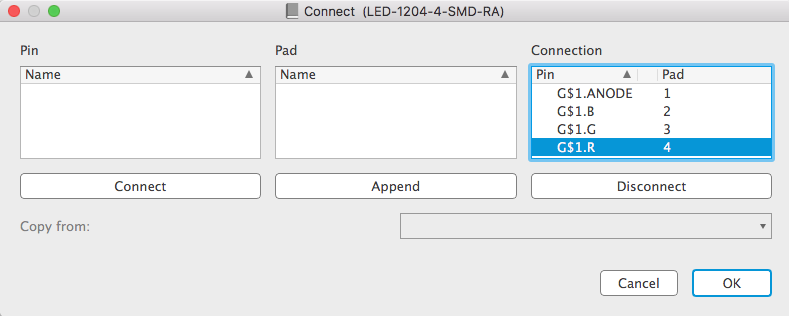Press OK to save the connections, and now the footprint will show a green checkmark next to it. This means that it has been connected to the symbol.
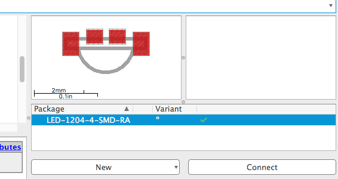The last thing to do, is to add the part number for this LED. It would be a shame if we went through all this work, but then forgot exactly what LED this was for.
Underneath the symbol drawing, there is a section with "Description", "Technologies", and "Attributes".
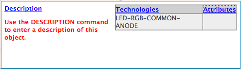You can put whatever you want inside the "Description" section (like links to digikey, or a summary of what the part does).
However, it is in the "Attributes" section that we commonly put a part number.
Click the "Attribute" blue link, and then in the window that opens click the New button.
An attribute has a name and a value. For the name, put PN (stands for part-number), and for the value always put the manufacturer's part number. This is different that the supplier's part number (which could be entirely different).
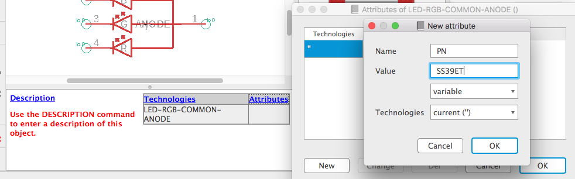Press OK to save, then OK again, and that footprint will now have a part number saved for this device.
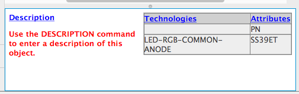Save everything, and now we have a side-firing RGB LED in our new Eagle library.
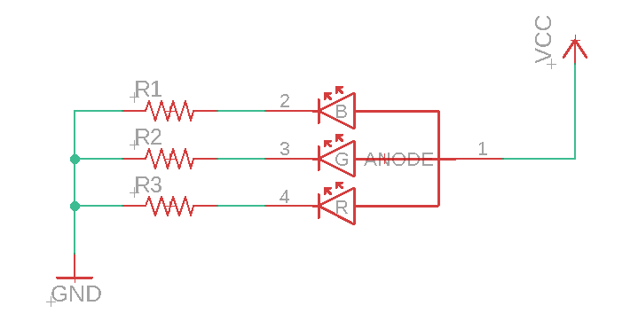 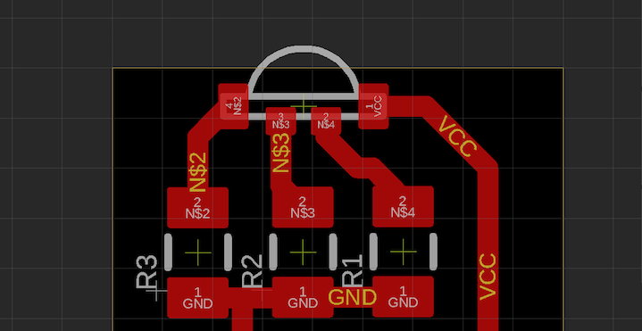You can also import devices, footprints, or symbols from one library into another library.
In the library's "Table of Contents" window, when you click Add Device (or add symbol or footprint), you can choose to Import a device.
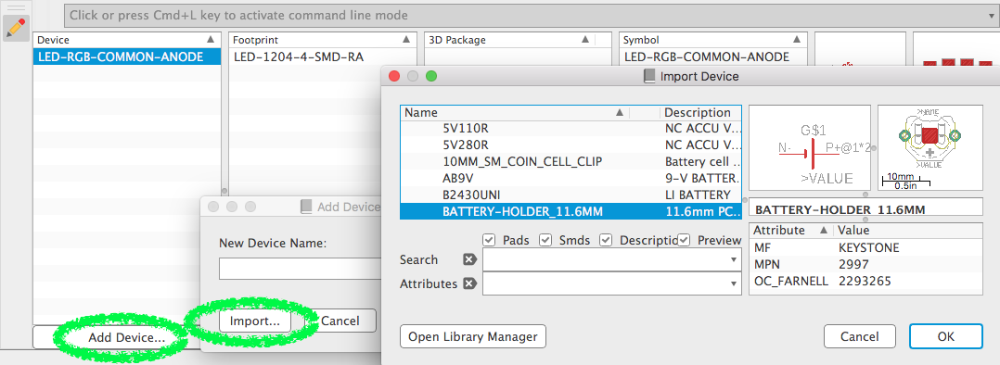Once that device is imported into your library, you will have access to the device, the footprints, and the symbol inside it.
If you have a schematic that, for example, you downloaded from the internet, then you may not be able to access the design's parts through the library editor. This is because the parts are embedded inside the design file, and not inside an actual Library.
You can convert the parts in a design file to an Eagle library by opening the schematic editor, and going up to File -> Export -> Libraries.
A window will open, where you can select which parts you want to export, how many individual libraries you want created, and if a prefix should be added to each device/footprint/symbol name.
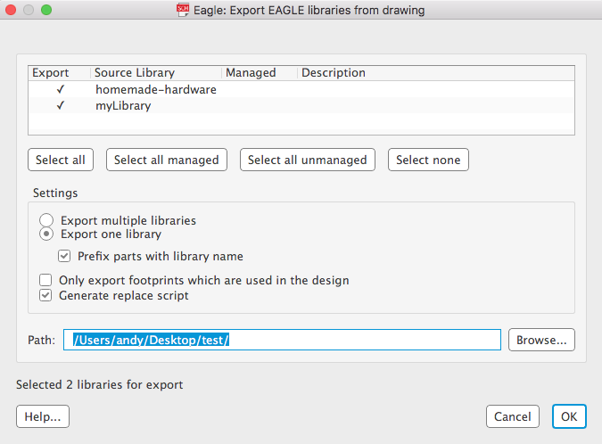Once the library is exported, you can add it to your Eagle file directory to re-use in other designs. Or, you can import this new library's parts into another Eagle library.
The world is yours.